BigDL
BigDL: A Distributed Deep Learning Framework for Big Data
Jason (Jinquan) Dai1, Yiheng Wang1, Xin Qiu1, Ding Ding1, Yao Zhang2 ǂ, Yanzhang Wang1, Xianyan Jia2 ǂ, Cherry (Li) Zhang1, Yan Wan3 ǂ, Zhichao Li1, Jiao Wang1, Shengsheng Huang1, Zhongyuan Wu1, Yang Wang1, Yuhao Yang1, Bowen She1, Dongjie Shi1, Qi Lu1, Kai Huang1, Guoqiong Song1
1Intel Corporation, 2Tencent Inc., 3Alibaba Group
ǂWork was done when the author worked at Intel
Abstract
In this paper, we present BigDL, a distributed deep learning framework for Big Data platforms and workflows. It is implemented on top of Apache Spark, and allows users to write their deep learning applications as standard Spark programs (running directly on large-scale big data clusters in a distributed fashion). It provides an expressive, “data-analytics integrated” deep learning programming model, so that users can easily build the end-to-end analytics + AI pipelines under a unified programing paradigm; by implementing an AllReduce like operation using existing primitives in Spark (e.g., shuffle, broadcast, and in-memory data persistence), it also provides a highly efficient “parameter server” style architecture, so as to achieve highly scalable, data-parallel distributed training. Since its initial open source release, BigDL users have built many analytics and deep learning applications (e.g., object detection, sequence-to-sequence generation, visual similarity, neural recommendations, fraud detection, etc.) on Spark.
1. Introduction
Recent breakthroughs in artificial intelligence have brought deep learning to the forefront of new generations of data analytics; as the requirements and usage models expand, new systems and architecture beyond existing deep learning frameworks (e.g., Caffe [1], Torch [2], TensorFlow [3], MXNet [4], Chainer [5], etc.) have inevitably emerged. In particular, there is increasing demand from organizations to apply deep learning technologies (such as computer vision, natural language processing, generative adversary networks, etc.) to their big data platforms and pipelines. This emerging convergence of deep learning and big data analytics is driven by several important technology and industry trends:
-
Data scale drives deep learning process. Today users are building even deeper, more complex neural networks to take advantage of the massive amount of data that they have access to. In practice, big data (e.g., Apache Hadoop [6] or Apache Spark [7]) clusters are ubiquitously deployed as the global data platform, where all the production data are stored and made available to all the users. Therefore, it is usually much more efficient to run the algorithm directly on the big data cluster where the data are stored and shared (than copying data to a separate infrastructure).
-
Real-world deep learning applications are complex big data pipelines, which require a lot of data processing (such as cleaning, transformation, augmentation, feature extraction, etc.) beyond model training/inference. Therefore, it is much simpler and more efficient (for development and workflow management) to seamlessly integrate deep learning functionalities into existing big data workflow running on the same infrastructure, especially given the recent improvements that reduce deep learning training time from weeks to hours [9] or even minutes [10].
-
Deep learning is increasingly adopted by the big data and data science community. Unfortunately, mainstream data engineers and data scientists are usually not deep learning experts; as the usages of deep learning expand and scale to larger deployment, it will be much more easier if these users can continue the use of familiar software tools and programming models (e.g., Spark [8] or even SQL) and existing big data cluster infrastructures to build their deep learning applications.
We have developed BigDL [11], a distributed deep learning framework for big data platforms and workflows. It is implemented as a library on top of Apache Spark, and allows users to write their large-scale deep learning applications (including model training, fine-tuning and inference) as standard Spark programs, which can run directly on existing big data (Hadoop or Spark) clusters. BigDL provides comprehensive support of deep learning technologies (neural network operations, layers, losses and optimizers); in particular, users can directly run existing models defined in other frameworks (such as TensorFlow, Keras [12], Caffe and Torch) on Spark in a distributed fashion.
BigDL also provides seamless integrations of deep learning technologies into the big data ecosystem. Not only can a BigDL program directly interact with different components in the Spark framework (e.g., DataFrames [13], Spark Streaming [14], ML Pipelines [15], etc.), it can also directly run in a variety of big data frameworks (such as Apache Storm [17], Apache Flink [18], Apache Kafka [19], etc.). Since its initial open source on Dec 30, 2016, BigDL has enabled many community users to build their deep learning applications (e.g., object detection, sequence-to-sequence generation, visual similarity, neural recommendations, fraud detection, etc.) on Spark and big data platforms.
2. Programming Model
BigDL is implemented on Apache Spark, a widely used cluster computing engine for big data analysis. Spark provides a comprehensive set of libraries for relational processing, streaming, graph processing [16] and machine learning (in Python, Scala or Java); as a result, one can easily build the end-to-end, “data-analytics integrated” deep learning and AI pipelines (under a unified programing paradigm) using Spark and BigDL, as illustrated in Figure 1.
1 spark = SparkContext(appName="text_classifier", …)
2 //load input data: (text, label) pairs
3 texts_rdd = spark.textFile("hdfs://...")
4 //convert text to list of words
5 words_rdd = texts_rdd.map(lambda text, label:
6 ([w for w in to_words(text)], label))
7 //load GloVe embedding
8 w2v = news20.get_glove_w2v(dim=…)
9 //convert word list to list of vertors using GloVe embeddings
10 vector_rdd = words_rdd.map(lambda word_list, label:
11 ([to_vec(w, w2v) for w in word_list], label))
12 //convert (list of vertors, label) pair to Sample
13 sample_rdd = vector_rdd.map(lambda vector_list, label:
14 to_sample(vector_list, label))
15 //construct neural network model
16 model = Sequential().add(Recurrent().add(LSTM(…)))
17 .add(Linear(…))
18 .add(LogSoftMax())
19 //train the model
20 loss = ClassNLLCriterion()
21 optim_method = Adagrad()
22 optimizer = Optimizer(model=model, training_rdd=sample_rdd,
23 criterion=loss, optim_method= optim_method, …)
24 optimizer.set_train_summary(summary = TrainSummary(…))
25 trained_model =optimizer.optimize()
26 //model prediction
27 test_rdd = …
28 prediction_rdd = trained_model.predict(test_rdd)
Figure 1. The end-to-end text classification pipeline (including data loading, tokenization, word vectorization, training, prediction, etc.) on Spark and BigDL.
2.1. Spark
Spark provides the Resilient Distributed Dataset (RDD) [8] in-memory storage abstraction, which is an immutable collection of Python or Scala/Java objects partitioned across a cluster, and can be transformed to derive new RDDs through data-parallel functional operators like map, filter and reduce. Consequently, users can efficiently load very large dataset and process the loaded data in a distributed fashion using Spark, and then feed the processed data into the analytics and AI pipeline. For example, lines 1 ~ 6 in Figure 1 illustrates how to load the input data (article texts and their associated labels) from the Hadoop Distributed File System (HDFS) [20], and transforms each text string into a list of words.
2.2. Data transformation
Spark supports general dataflow DAGs [8] by composing multiple data-parallel operators on RDD, where each vertex represents an RDD and each edge represents the transformation by the RDD operator. By constructing the dataflow DAG in Spark, users can easily transform the input data (for, e.g., image augmentations, word vectorizations, etc.), which can then be used by the neural network models. For example, lines 7 ~ 11 in Figure 1 illustrates how to apply GloVe word embedding [21] to transform each word to a vector.
-
N-dimensional array: In BigDL, we model the basic data elements used in neural network computations as N-dimensional numeric (int8, float32, etc.) arrays. These arrays are represented by numpy.ndarry [22] and BigDL.Tensor (similar to Torch.Tensor [23]) for BigDL Python and Scala/Java APIs respectively.
-
Sample: Each record used in BigDL model training and prediction is modelled as a Sample, which contains an input feature and an optional label. Each input feature is one or more N-dimensional arrays, while each label is either a scalar (float32) value, or one or more N-dimensional arrays. For instance, lines 12 ~ 14 in Figure 1 shows how to turn the transformed data into an RDD of Samples, which will later be used by BigDL model training.
2.3. Model Construction
Similar to Torch and Keras, BigDL uses a dataflow representation for the neural network model, where each vertex in the dataflow graph represents a neural network layer (such as ReLu, Spatial Convolution and LSTM). BigDL then uses the semantics of the layers for model evaluation (forward) and gradient computation (backward). For example, lines 15 ~ 18 in Figure 1 illustrates the model definition used in the text classification example.
2.4. Model training
The transformed input data (RDD of Samples) and the constructed model can then be passed over to the Optimizer in BigDL, which automatically performs distributed model training across the cluster, as illustrated by lines 19 ~ 25 in Figure 1.
-
Optimizer: In BigDL, the distributed training process is modelled by the Optimizer abstraction, which runs multiple, iterative Spark jobs to minimize the loss (as defined by the user specified Criterion) using specific optimization method (such as SGD, AdaGrad [24], Adam [25], etc.).
-
Visualization: To make it easy for users to understand the behaviors of model training, the optimizer in BigDL can be configured to produce a TrainSummary that contains various summary data (e.g., loss, weight, etc.), as illustrated by line 24 in Figure 1; the summary data can then be visualized in, for instance, TensorBoard [26] or Jupytor Notebooks [27].
2.5. Model Inference
BigDL also allows users to directly use existing models (pre-trained by Caffe, Keras, TensorFlow, Torch or BigDL) in Spark, so as to directly perform model prediction in a distributed fashion (using RDD transformations), as illustrated by lines 26 ~ 28 in Figure 1.
- ModelBroadcast: BigDL provides the ModelBroadcast abstraction to manage the deployment of the pre-trained model across the cluster in a Spark job; the model prediction operation (predict) in BigDL uses ModelBroadcast to cache a single copy of the model on each machine (by leveraging the broadcast [28] mechanism in Spark), and manage the model cloning and weight sharing among different tasks in the same machine.
2.6. Spark DataFrame and ML Pipeline
Besides RDD, Spark provides a high level DataFrame abstraction [13], which is a distributed collection of rows with a specific schema (similar to a table in a relational database), and implements data-parallel relational operators like filter and join for efficient structured data analysis. On top of DataFrame, Spark introduces a high level ML (machine learning) pipeline [15] similar to SciKit-Learn [29], which allows users to construct the machine learning workflow as a graph of transformations on data (e.g., feature extraction, normalization, model training, etc.). BigDL also provides native integration with the high level Spark DataFrame and ML Pipeline APIs (using its DLModel and DLEstimator abstractions).
3. Execution Model
Similar to other Big Data systems (such as MapReduce [30]), a Spark cluster consists of a single driver node and multiple worker nodes, as shown in Figure 2. The driver node is responsible for coordinating the tasks in a Spark job (e.g., scheduling and dispatching), while the worker nodes are responsible for the actual computation and physical data storage. To automatically parallelize the large-scale data processing across the cluster in a fault-tolerant fashion, Spark provides a functional compute model where immutable RDDs are transformed through coarse-grained operators (i.e., applying the same operation to all data items).
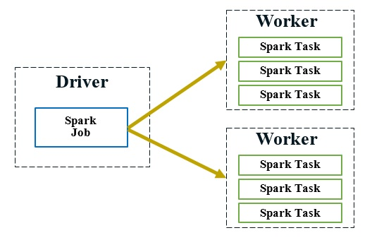
Figure 2. A Spark job contains many Spark tasks; the driver node is responsible for scheduling and dispatching the tasks to worker nodes, which runs the actual Spark tasks.
On the other hand, efficient and distributed training of deep neural networks would necessitate very different operations (such as fine-grained data access and in-place data mutation [3]). In this section, we describe in details how BigDL supports highly efficient and scalable distributed training, directly on top of the data parallel and functional compute model of Spark (in addition to various optimizations for model inference).
3.1. Data-parallel training
To train a deep neural network model across the cluster, BigDL provides data-parallel training on Spark using synchronous mini-batch SGD, which is shown to achieve better scalability and efficiency (in terms of time-to-quality) compared to asynchronous training [31][32]. The distributed training in BigDL is implemented as an iterative process, as illustrated in Figure 3; each iteration runs a couple of Spark jobs to first compute the gradients using the current mini-batch, and then make a single update to the parameters of the neural network model.
for (i <- 1 to N) {
//"model forward-backward" job
for each task in the Spark job:
read the latest weights
get a random batch of data from local Sample partition
compute errors (forward on local model replica)
compute gradients (backward on local model replica)
//"parameter synchronization" job
aggregate (sum) all the gradients
update the weights per specified optimization method
}
Figure 3. BigDL provides efficient, data-parallel, synchronous mini-batch SGD, where each iteration runs two Spark jobs for “model forward-backward” and “parameter synchronization”.
As described in Section 2, BigDL models the training data as an RDD of Samples, which are automatically partitioned and potentially cached in memory across the Spark cluster. In addition, to implement the data-parallel training, BigDL also constructs an RDD of models, each of which is a replica of the original neural network model. The model and Sample RDDs are co-partitioned and co-located [14] across the cluster, as shown in Figure 4; consequently, in each iteration of the model training, a single “model forward-backward” Spark job can apply the functional zip operator to the partitions of model and Sample RDDs, and compute the gradients in parallel for each model replica (using a small batch of data in the co-located Sample partition), as illustrated in Figure 4.
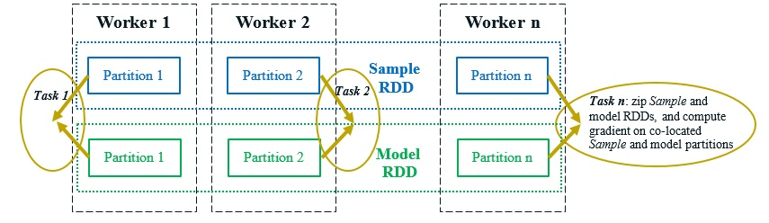
Figure 4. The “model forward-backward” spark job, which computes the local gradients for each model replica in parallel.
3.2. Parameter synchronization
Parameter synchronization is a performance critical operation for data-parallel training (in terms of speed and scalability). To support efficient parameter synchronization, existing deep learning frameworks usually implement the parameter server [33][34][35] architecture or AllReduce [36] operation, which unfortunately cannot be directly supported by the functional compute model provided by the Big Data systems.
In BigDL, we have adapted the primitives available in Spark (e.g., shuffle, broadcast, in-memory cache, etc.) to implement an efficient AllReduce-like operation, so as to mimic the functionality of a parameter server architecture (as illustrated in Figure 5).
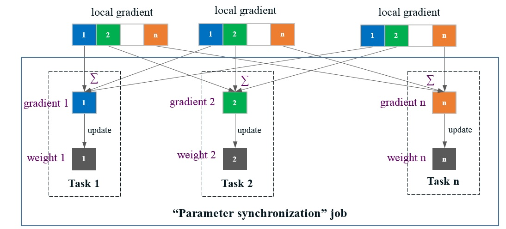
Figure 5. Parameter synchronization in BigDL. Each local gradient (computed by a task in the “model forward-backward” job) is evenly divided into N partitions; then each task n in the “parameter synchronization” job aggregates these local gradients and update the weights for the nth partition.
-
A Spark job has N tasks, each of which is assigned a unique Id ranging from 1 to N in BigDL. After each task in the “model forward-backward” job computes the local gradients (as described in section 3.1), it evenly divides the local gradients into N partitions, as shown in Figure 5.
-
Next, another “parameter synchronization” job is launched; each task n in the “parameter synchronization” job is responsible for managing the nth partition of the parameters, just like a parameter server (as shown in Figure 6). Specifically, the nth partition of the gradients (from all the tasks of the previous “model forward-backward” job) are first shuffled to task n, which then aggregates (sums) these gradients, and applies the updates to the nth partition of the weights (using the specific optimization method), as illustrated in Figure 5.
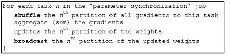
Figure 6. The “parameter synchronization” Spark job, manages the nth partition of the parameters (similar to a parameter server).
-
After that, each task n in the “parameter synchronization” job broadcasts the nth partition of the updated weights; consequently, tasks in the “model forward-backward” job of the next iteration can read the latest value of all the weights before the next training step begins.
-
The shuffle and task-side broadcast operations described above are implemented on top of the distributed in-memory storage in Spark: both the shuffled gradients and broadcasted weights are materialized in memory, which can be read remotely by the Spark tasks with extremely low latency.
By implementing the AllReduce operation using primitives in Spark, BigDL provides a highly efficient “parameter server” style architecture directly on top of Big Data frameworks. As a result, it is demonstrated to support highly scalable distributed training on up to 256-node, as reported by Cray [37] and shown in Figure 7.
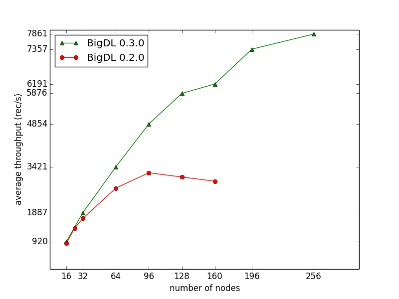
Figure 7. Throughput of ImageNet Inception v1 training reported by Cary [37] (using BigDL 0.3.0 and dual-socket Intel Broadwell 2.1 GHz); the training throughput scales almost linear up to 128 nodes (and continue to scale reasonably up to 256 nodes).
3.3. Task scheduling
While BigDL provides a highly efficient “parameter server” style architecture, it has a fundamentally different implementation than existing deep learning frameworks. In particular, existing deep learning frameworks are typically deployed as multiple long-running, potentially stateful tasks [3], which interact with each other (in a blocking fashion to support synchronous mini-batch SGD) for model computation and parameter synchronization.
In contrast, BigDL runs a series of short-lived Spark jobs (e.g., two jobs per mini-batch as described in earlier sections), and each task in the job is stateless and non-blocking. As a result, BigDL programs can automatically adapt to the dynamic resource changes (e.g., preemption, failures, incremental scaling, resource sharing, etc.) in a timely fashion. On the other hand, task scheduling in Spark can become a potential bottleneck of the distributed training on a large cluster. For instance, Figure 8 shows that, for ImageNet Inception v1 training, the overhead of launching tasks (as a fraction of average compute time) in BigDL, while low for 100~200 tasks, can grows to over 10% when there are close to 500 tasks [39]. To address this issue, BigDL will launch a single, multi-threaded task on each worker, so as to achieve high scalability on large clusters (e.g., up to 256 servers as shown in Figure 7 above).
To scale to an even larger number (e.g., 500) of workers, one can potentially leverages the iterative nature of the model training (in which the same operations are executed repeatedly). For instance, group scheduling introduced by Drizzle [38] (a low latency execution engine for Spark) can help schedule multiple iterations (or a group) of computations at once, so as to greatly reduce scheduling overheads even if there are a large number of tasks, as benchmarked by RISELab [39] and shown in Figure 8.
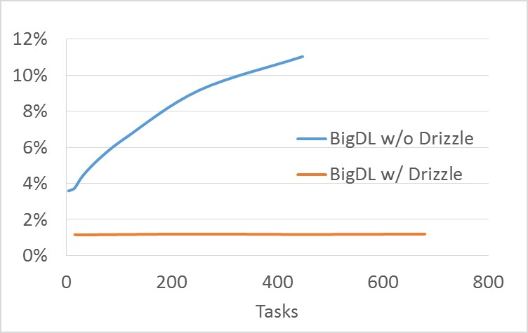
Figure 8. Overheads of task scheduling and dispatch (as a fraction of average compute time) for ImageNet Inception v1 training in BigDL [39].
3.4. Model quantization
Quantization refers to using technologies that store numbers and perform calculations on them in more compact and lower precision form (than their original format such as 32-bit floating point). BigDL takes advantage of this type of low precision computing to quantize existing models (which can be pre-trained by various frameworks such as Caffe, Keras, TensorFlow, Torch or BigDL) for optimized inference.
BigDL first loads existing models and then quantizes the parameters of some selected layers (e.g., Spatial Convolution) into 8-bit integer (using the equation shown in Figure 9) to produce a quantized model. During model inference, each quantized layer quantizes the input (float32) data into 8-bit integer on the fly, applies the 8-bit calculations (such as GEMM) using the quantized parameters and data, and dequantizes the results to 32-bit floating point. Many of these operations can be fused in the implementation, and consequently the quantization and dequantization overheads are very low at inference time.
Math.round(1.0 * value
/ Math.max(Math.abs(max), Math.abs(min))
* Byte.MaxValue).toByte
Figure 9. Equation for quantizing 32-bit floating point to 8-bit integer.
Unlike many existing quantization implementations, BigDL adopts a new local quantization scheme. That is, it performs the quantization and dequantization operations (as described above) in each small local quantization window, a small sub-block (such as a patch or kernel in convolution) of the parameters or input data. As a result, BigDL can use very low bit integers, such as 8-bit, in model quantization with extremely low model accuracy drop (less than 0.1%), 4x model size reduction, and up to 2x inference speedup, as benchmarked on AWS EC2 [40] and shown in Figure 10.
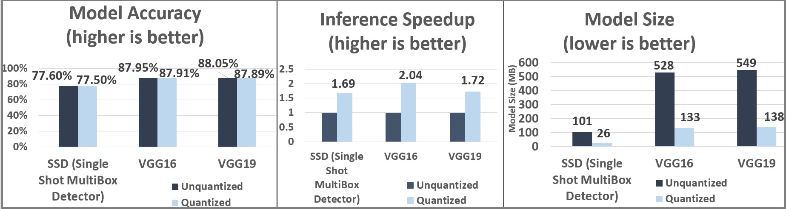
Figure 10. Model quantization results (accuracy, inference speed and model size) for SSD, VGG16 and VGG19 (using BigDL 0.3.0 and AWS EC2 C5.18xlarge instances) [40].
3.5. Local execution
In addition to being a standard Spark program, BigDL also provide support to run the model training and inference on a local JVM (without Spark). This helps improve the efficiency when running BigDL on a single node, as there are no overheads such as parameter synchronizations or task scheduling. More importantly, it makes it easy to directly integrate BigDL models (for either inference or fine-tuning) with various big data frameworks, such as Apache Storm, Apache Flink or Apache Kafka, which are usually JVM based.
4. Applications
Since its initial open source release (on Dec 30, 2016), BigDL users have built many deep learning applications on Spark and Big Data platforms. In this section, we describes three typical use cases (namely, model inference, distributed training and transfer learning) using Spark and BigDL.
4.1. Model Inference: image feature extraction
JD.com [41] is one of the largest online retailers in the world. It has built an end-to-end object detection and image feature extraction pipeline on top of Spark and BigDL[42], as illustrated in Figure 11.
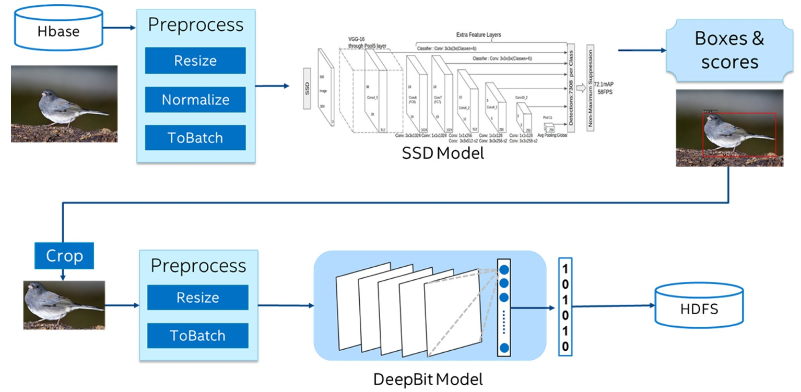
Figure 11. End-to-end object detection and image feature extraction pipeline (using SSD and DeepBit models) on top of Spark and BigDL [42].
-
The pipeline first reads hundreds of millions of pictures from a distributed database into Spark (as an RDD of pictures), and then pre-processes the RDD of pictures (including resizing, normalization, and batching) in a distributed fashion using Spark.
-
After that, it uses BigDL to load a SSD [43] model (pre-trained in Caffe) for large scale, distributed object detection on Spark, which generates the coordinates and scores for the detected objects in each of the pictures.
-
It then generates the target images (by keeping the object with highest score as the target, and cropping the original picture based on the coordinates of the target), and further pre-processes the RDD of target images (including resizing and batching).
-
Finally it uses BigDL to load a DeepBit [44] model (again pre-trained in Caffe) for distributed feature extraction of the target images to generate the corresponding features, and stores the results (RDD of extracted object features) in the Hadoop Distributed File System (HDFS).
The entire data analytics and deep learning pipeline, including data loading, partitioning, preprocessing, model inference, and storing the results, can be easily implemented under a unified programming paradigm (using Spark and BigDL). In addition, the end-to-end pipeline also delivers ~3.83x speedup compared to running the same solution on a GPU cluster, as reported by JD [42] and shown in Figure 12.
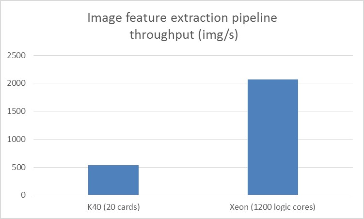
Figure 12. Throughput of GPU clusters and Xeon clusters for the image feature extraction pipeline benchmarked by JD [42]; the GPU throughput is tested on 20 NVIDIA Tesla K40 cards, and the Xeon throughput is tested on 1200 logical cores (where each dual-socket Intel Xeon E5-2650 v4 server runs 50 logical cores).
4.2. Distributed training: precipitation nowcasting
Cray has integrated BigDL to their Urika-XC analytics software suite, and built an end-to-end precipitation nowcasting (predicting short-term precipitation) workflow on spark and BigDL[37], including data preparation, model training and inference (as illustrated in Figure 13).
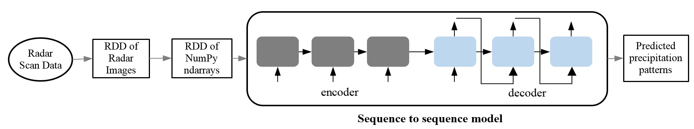
Figure 13. End-to-end precipitation nowcasting workflow (using sequence-to-sequence model) [37] on Spark and BigDL.
-
The application first reads over a terabyte of raw radar scan data into Spark (as an RDD of radar images), and then converts it into an RDD of NumPy ndarrays.
-
It then trains a sequence-to-sequence model [45][46] (as illustrated in Figure 13), using a sequence of images leading up to the current time as the input, and a sequence of predicted images in the future as the output.
-
After the model is trained, it can be used to predict, say, precipitation patterns for the next hour, as illustrated in Figure 14.
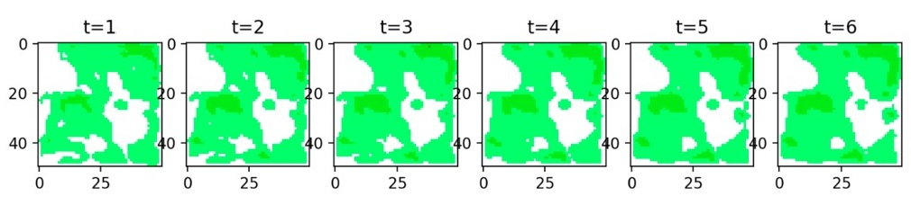
Figure 14. Predicting precipitation patterns for the next hour (i.e., a sequence of images for the future time steps of the next hour) on Spark and BigDL [37]
4.3. Transfer learning: image-similarity based house recommendations
MLSListings Inc. is a large Multiple Listing Service (MLS) for real estate listings, who has been building an image-similarity based house recommendation system on Spark and BigDL [47]. The end-to-end workflow is implemented by leveraging transfer learning (including feature extractions and fine-tuning) technologies, so as to compute both the semantic and visual similarity of the house photos, as illustrated in Figure 15.
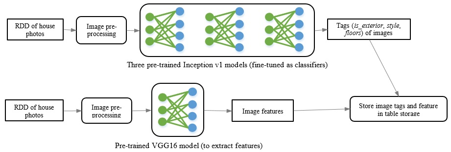
Figure 15. End-to-end workflow for image-similarity based house recommendations on Spark and BigDL [47]
To compute the semantic similarity for the photos, the system fine-tunes the Inception v1 [48] model pre-trained on the Places dataset [49], so as to train three new classifiers (namely, whether the photo shows the house front exterior, the house style and the house stories). In particular, it first loads three pre-trained Inception v1 models, and then appends two new layers (a fully-connected layer followed by a Softmax layer) to each model, so as to train the new classifiers (using photos for which MLSListings have been assigned copyrights). After the training, it can use these classifiers to produce the tags (or labels) for each house listing photo.
To compute the visual similarity, the system use the VGG-16 [50] model pre-trained on the Places dataset to extract the image feature for each house listing photo, which is then combined with the tags generated by the classifiers and stored into a distributed table storage.
At model serving time, the user can select a house listing photo, and have the system to recommend house listings of similar visual characteristics (by computing the cosine similarity score using the image features, while taking into considerations other properties of the houses such as photo tags, house prices, locations, etc.), as illustrated in the “Similar Houses” section of the webpage in Figure 16.
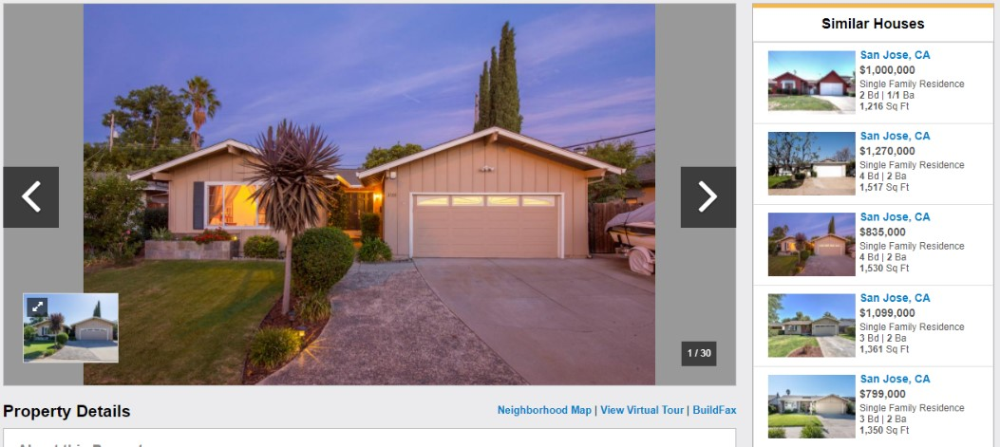
Figure 16. Automatically recommending “Similar Houses” with similar visual characteristics [47]
5.Related Work
Existing big data systems, such as MapReduce [30], Dryad [51] and Spark [8], provide a data-parallel, functional compute model (with potentially dataflow DAG support), so as to efficiently support data partitioning, parallel and distributed computing, fault tolerance, incremental scale-out, etc., in an automatic and transparent fashion. BigDL is built on top of this data-parallel, functional compute model, and adds new support of deep learning technologies to Apache Spark, so as to provide the “data-analytics integrated” deep learning programming model.
Existing deep learning frameworks, such as Caffe [1], Torch [2], TensorFlow [3], Keras [12], MXNet [4] and DL4J [52], usually use a dataflow graph (of either primitive operators or more complex layers) to represent neural network models. For distributed training, they typically implement the parameter server architecture or AllReduce operation (with fine-grained data access and in-place data mutation [3]), which are however not supported by existing big data systems. In contrast, BigDL adopts the similar dataflow representation of neural network models, but provides efficient distributed training directly on top of Apache Spark.
Recently there are also a lot of efforts to bring existing deep learning frameworks to Apache Spark. For instance, TensorFrames [53] and Deep Learning Pipelines [54] allow users to directly run TensorFlow or Keras models on each individual partition of Spark Dataframes, for both model inference and single-node model tuning; however, they do not support distributed model training or fine-tuning across multiple machines in a cluster. CaffeOnSpark [55] and TensorFlowOnSpark [56] frameworks use Spark as the orchestration layer to allocate resources from the cluster, and then launch the distributed Caffe or TensorFlow job on the allocated machines; however, the Caffe or TensorFlow job still runs outside of the big data framework, and has very limited interactions with the analytics pipelines. SparkNet [57] uses asynchronous SGD for distributed training on Spark; the master first broadcasts weights to the workers, and each work then trains its own Caffe model for a certain period of time, after which the weights on each worker are sent to the master and averaged to form the new weights; however, the broadcast and weight averaging is very inefficient in SparkNet (e.g., ~20 seconds with just 5 workers [57]). In contrast, BigDL provides highly efficient and scalable distributed training, directly on top of big data framework (using the primitives available in Spark).
6. Summary
We have described BigDL, including its programming model, execution model and typical use cases. It combines the benefits of big data and HPC (high performance computing) architecture, so as to provide both an expressive, “data-analytics integrated” deep learning programing model for users to build their analytics + AI pipelines, and a highly efficient “parameter server” style architecture directly on top of Big Data platforms for scalable data-parallel training.
BigDL is a work in progress, but our initial experience is encouraging. Since its initial open source release (on Dec 30, 2016), it has received over 2400 stars on Github; and it have enabled many users to build new analytics and deep learning applications, which can directly run on top of existing Hadoop and/or Spark clusters.
7. Acknowledgement
We gratefully acknowledge contributions from our (current and former) colleagues at Intel (including Jun Wang, Liangying Lv, Andy Chen, Yan Dai, Sergey Ermolin, Zewei Chen, Ning Wang, Yulia Tell, Pengfei Yue, Wesley Du, Erjin Ren, Xiao Dong Wang, Radhika Rangarajan, Jack Chen, Milind Damle and Dave Nielsen), and numerous users and collaborators from the open source community (including Shivaram Venkataraman, Xiao Xu, Zhenhua Wang, Alex Heye, Omid Khanmohamadi, Mike Ringenburg, Joseph Spisak, Gopi Kumar, Suqiang Song, Karthik Palaniappan, Rong Gu, etc.) to the BigDL project.
8. Reference
[1] Caffe. http://caffe.berkeleyvision.org
[2] Torch. http://torch.ch
[3] Martín Abadi, et al. “TensorFlow: A System for Large-Scale Machine Learning”, OSDI 2016.
[4] Tianqi Chen, et al. “MXNet: A Flexible and Efficient Machine Learning Library for Heterogeneous Distributed Systems”, LearningSys 2015.
[5] Seiya Tokui, et al. “Chainer: a Next-Generation Open Source Framework for Deep Learning”. LearningSys 2015.
[6] Apache Hadoop. http://hadoop.apache.org
[7] Apache Spark. https://spark.apache.org
[8] Matei Zaharia , et al. “Resilient Distributed Datasets: A Fault-Tolerant Abstraction for In-Memory Cluster Computing”, NSDI 2012.
[9] Priya Goyal, et al. “Accurate, Large Minibatch SGD: Training ImageNet in 1 Hour”, arXiv: 1706.02677 [cs.CV]
[10] Yang You, et al. “ImageNet Training in Minutes”, arXiv:1709.05011 [cs.CV]
[11] BigDL. https://github.com/intel-analytics/BigDL/
[12] Keras. https://keras.io
[13] Michael Armbrust, et al. “Spark SQL: Relational Data Processing in Spark”, SIGMOD 2015.
[14] Matei Zaharia, et al. “Discretized Streams: Fault-Tolerant Streaming Computation at Scale”, SOSP 2013.
[15] Xiangrui Meng, et al. “MLlib: Machine Learning in Apache Spark”, Journal of Machine Learning Research (JMLR) 2016.
[16] Reynold S. Xin, et al. “GraphX: Unifying Data-Parallel and Graph-Parallel Analytics”, OSDI 2014.
[17] Apache Storm. http://storm.apache.org
[18] Apache Flink. https://flink.apache.org
[19] Apache Kafka. https://kafka.apache.org
[20] Konstantin Shvachko, et al. “The Hadoop Distributed File System”, MSST 2010.
[21] Jeffrey Pennington, et al. “GloVe: Global Vectors for Word Representation”, EMNLP 2014.
[22] Numpy. http://www.numpy.org
[23] Torch7. https://github.com/torch/torch7
[24] J. Duchi, et al. “Adaptive subgradient methods for online learning and stochastic optimization.” Journal of Machine Learning Research (JMLR) 2011.
[25] Diederik P. Kingma, et al. “Adam: A Method for Stochastic Optimization”, ICLR 2015.
[26] M. Abadi, et al.“Tensorflow: Large-scale machine learning on heterogeneous distributed systems., 2016.
[27] Project Jupyter. http://jupyter.org
[28] Reynold Xin, et al. “Shark: SQL and Rich Analytics at Scale”, SIGMOD 2013.
[29] SciKit-Learn. http://scikit-learn.org/stable/
[30] Jeffrey Dean, et al. “MapReduce: simplified data processing on large clusters”, OSDI 2014.
[31] J. Chen, et al. “Revisiting distributed synchronous SGD”, ICLR Workshop 2016.
[32] H. Cui, et al. “GeePS: Scalable deep learning on distributed GPUs with a GPU specialized parameter server”, EuroSys 2016.
[33] J. Dean, et al. “Large scale distributed deep networks”, NIPS 2012.
[34] T. Chilimbi, et al. “Project Adam: Building an efficient and scalable deep learning training system”, OSDI 2014.
[35] M. Li, et al. “Scaling distributed machine learning with the Parameter Server”, OSDI 2014.
[36] Andrew Gibiansky. Bringing HPC Techniques to Deep Learning
[37] Alex Heye, et al. Scalable Deep Learning with BigDL on the Urika-XC Software Suite
[38] Shivaram Venkataraman, et al. “Drizzle: Fast and Adaptable Stream Processing at Scale”, SOSP 2017.
[39] Shivaram Venkataraman, et al. Accelerating Deep Learning Training with BigDL and Drizzle on Apache Spark
[40] Jason (Jinquan) Dai, et al. Leveraging Low Precision and Quantization for Deep Learning Using the Amazon EC2 C5 Instance and BigDL
[41] JD. https://en.wikipedia.org/wiki/JD.com
[42] Jason (Jinquan) Dai, et al. Building Large-Scale Image Feature Extraction with BigDL at JD.com
[43] Wei Liu, et al. “SSD: Single Shot MultiBox Detector”, ECCV 2016.
[44] Kevin Lin, et al. “Learning Compact Binary Descriptors with Unsupervised Deep Neural Networks”, CVPR 2016.
[45] I. Sutskever, et al. “Sequence to sequence learning with neural networks”, NIPS 2014.
[46] Xingjian Shi, et al. “Convolutional LSTM Network: A Machine Learning Approach for Precipitation Nowcasting”, NIPS 2015.
[47] Jason (Jinquan) Dai, et al. “Using BigDL to Build Image Similarity-Based House Recommendations”
[48] Christian Szegedy, et al. “Going deeper with convolutions”, CVPR 2015.
[49] B. Zhou, et al. “Places: A 10 million Image Database for Scene Recognition”, IEEE Transactions on Pattern Analysis and Machine Intelligence (TPAMI), 2017.
[50] Karen Simonyan, at al. “Very Deep Convolutional Networks for Large-Scale Image Recognition”, 2014.
[51] Michael Isard, et al. “Dryad: distributed data-parallel programs from sequential building blocks”, EuroSys 2017.
[52] DJ4J. https://deeplearning4j.org/
[53] TensorFrames. https://github.com/databricks/tensorframes
[54] Deep Learning Pipelines. https://github.com/databricks/spark-deep-learning
[55] CaffeOnSpark. https://github.com/yahoo/CaffeOnSpark
[56] TensorFlowOnSpark. https://github.com/yahoo/TensorFlowOnSpark
[57] Philipp Moritz, et al. “SparkNet: Training Deep Networks in Spark”, ICLR 2016.